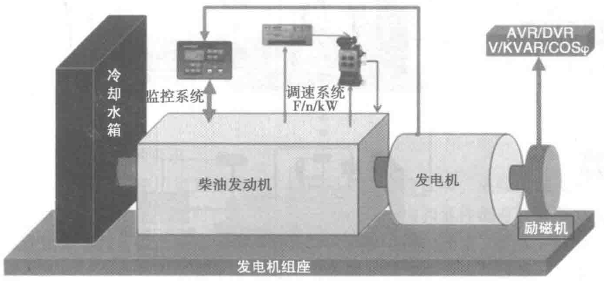

| 功率定义 | 功率类型 | 负载类型 | 运行时限/h | 超载性能 | 负载 因数/% | 与国标对应 关系 |
|---|---|---|---|---|---|---|
| 国产标 | 主用功率 | 可变 | 不限 | 10% 1h/12h | — | PRP-COP |
| 备用功率 | 可变 | 500 | — | — | LTP | |
| 进口标 | 备用功率 standby power | 可变 | 200/500 | — | 60-70 | LTP/ESP |
| 长行功率 prime power | 可变 | 不限 | （10% 1h/12h） | 50-90 | PRP | |
| 持续功率 continuous power | 恒定 | 不限 | — | — | COP | |
| 限时运行功率 limited power | 可变 | 500 | — | — | LTP |
备注：此表引用自2015年版中国数据中心工作组编制的《数据中心备用电源技术白皮书》。
5.4 后备发电机供电及电源
数据中心后备发电机供电电源由柴油发电机组及配套电控设备、供储油系统、进排风系统、排烟系统、消声降噪装置、消防系统、监视报警系统和其他辅助系统组成。
5.4.1 柴油发电机组及配套电控设备
由柴油发电机组、机组检修隔离柜、开关柜、并机系统屏、接地装置柜、直流电源屏、蓄电池组、排烟消声装置、配套高低压桥架及控制线槽和其他辅助设施组成。
1. 柴油发电机组的组成
柴油发电机组主要由柴油发动机、发电机、安全监控、控制器等组成，如图5-1所示。

（1）柴油发动机
柴油发动机主要由燃油供给与调速系统、进排气系统、润滑系统、冷却系统、启动充